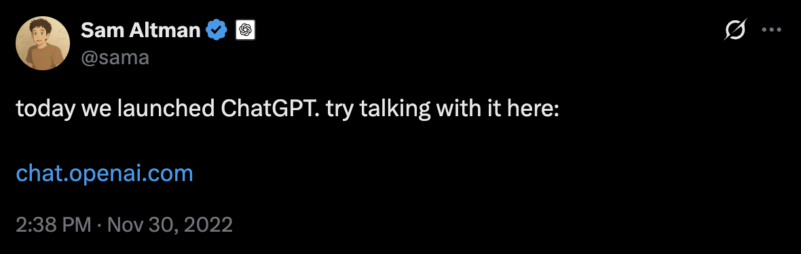
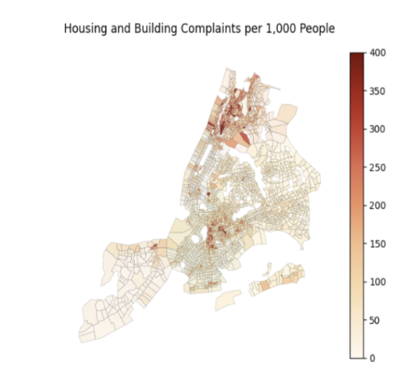
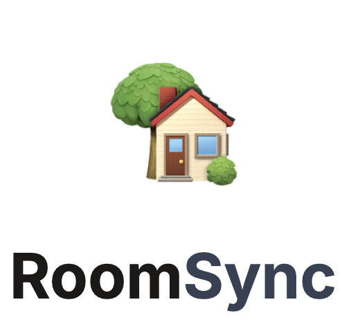

Marquis Wong
Hey!
I'm a M.S. graduate student studying Information Science at Cornell Tech in NYC.
I think 'aesthetic' is just another word for emotional data. ✦ ✧ ⋆ ✦ ★ ✧ ⋆ ✦ ★ ✧ ⋆ ✦ ✦ ✧ ⋆ ★ ✦ ✧ ⋆ ★ ✦ ✧ ⋆ ★
Projects
ChatGPT & DeepSeek Tweets Sentiment Analysis
Python, VADER, TextBlob, SentenceTransformers, UMAP, MiniBatchKMeans
- Built End-to-End ETL pipeline merging historical (Kaggle) and live Twitter API data (~43K tweets) into unified dataset
- Designed preprocessing framework for noisy social media text and applied dual sentiment models (VADER, TextBlob) to score polarity, validating results with a 74.6% cross-model agreement
- Performed semantic clustering with SentenceTransformers, UMAP, and MiniBatchKMeans to uncover key thematic groups, then ran correlation analyses linking sentiment, user features, and engagement metrics
- Delivered interpretable outputs via heatmaps, confusion matrices, and cluster visualizations
Exploring what 311 Requests reveal about NYC's Neighborhoods
Python, Pandas, GeoPandas, scikit-learn
- Pipeline and merge NYC 311 requests, Census demographic data, shapefiles (200k+ records) for geospatial analysis
- Applied regression and clustering analyses exploring correlations between complaints, income, and race
- Visualized complaint density to neighborhood-level demographics, uncovering disparities in service requests
RoomSync-Lite – Roommate Matching Web App
Next.js, React, PostgreSQL, Tailwind CSS, Drizzle ORM, Framer Motion, shadcn/ui
- Developed full-stack application enabling profile onboarding, preference-based matching, and secure authentication
- Implemented type-safe database with Drizzle and friendly UI design with Tailwind CSS, Framer Motion and shadcn/ui
- Deployed on Vercel, achieving real-time updates and seamless user experience through API and database integrations
- Engineered a compatibility scoring algorithm and swipe-style UI to mimic consumer dating apps, boosting usability and engagement during prototype testing
Professional Experience
Ernst & Young Advisory Services Ltd.
Quarry Bay, Hong Kong | Jul 2023 – Aug 2023
Business Advisory Intern: Climate Change and Sustainability Services
- Collaborated with clients in the lifecycles of different projects pertaining to various industrial operations – work ranges from due diligence, conducting climate risk assessments, to identifying feasible ESG initiatives for investment opportunities
- Developed project pipeline for a top UK conglomerate, recommended that suggested investments were not viable through projecting and analyzing future cash flows with risks considered, ultimately pivoting management's perspective
- Secured a $20M green bank loan for a client by modeling quantitative market data and conducting multiple regression forecasts to assess the feasibility of their proposed 2030 targets, recommending alternative investments
AECOM Company Ltd.
Sha Tin, Hong Kong | Jun 2022 – Aug 2022
Urban Technician Intern: U+P
- Produced weekly technical assessments for diverse urban redevelopment initiatives, following the project lifecycle
- Collaborated extensively with upper management on the Northern Metropolis project, presenting data-driven land use and development insights that reshaped perspectives on previously overlooked redevelopment opportunities
Education
Cornell Tech
New York, NY | Expected May 2026
M.S. Applied Information Science (Technion) & M.S. Information Systems (Cornell), Connective Media Concentration
Awards: William & Barbara Dahl Master's Fellowship Fund (Merit Scholarship)
Cornell University
Ithaca, NY | 2020 - 2024
B.S. Urban and Regional Studies, Minors in Real Estate, Business
Awards: Dean's List (2021-2024), Community Service Award (2024)
Technical Skills & Interests
Technical/ Design
Python, Java, R, JavaScript, React, HTML, CSS, JavaScript, Photoshop, Indesign, Illustrator, Figma,AutoCAD, ArcGIS, QGIS, ARGUS
Major Libraries & Frameworks
Numpy, Pandas, Apache Spark, PyTorch, scikit-learn, StatsModel, PostgresQL, Docker, Next.js, React, Tailwind CSS, Drizzle ORM, Framer Motion, shadcn/ui
Coursework
Machine Learning Engineering, Data Science, HCI , Python, OOP (Java), Decision-Making Under Uncertainty
Leadership & Extracurricular Experience
Cornell University Sustainable Design
Ithaca, New York | Aug 2022 – May 2024
Analytics Manager: Waste Management Modeling Team — Ithaca Carbon Neutral 2030
- Designed and optimized a predictive emissions model in Excel, integrating multi-source datasets to track and analyze intervention effectiveness through KPIs; developed using municipal and national data, verified through back testing
- Partnered with Greenstar Coop to quantitatively validate proposed policy changes and initiatives aimed at food waste
Design Connect
Ithaca, New York | Jan 2022 – Dec 2023
Project Manager: Tioga Opportunities, Inc. — Residential Re-development
- Managed a cross-functional team of 11 peers in the end-to-end strategic planning and approved execution of residential re-development for two properties in Upstate NY; construction began in July 2024
- Led user research initiatives, employing surveys and interviews to deeply understand the needs and pain points of multicultural user groups
- Reduced project cost by $117,000 through cost benefit analysis, market research, and creative design thinking
Anabel's Grocery
Ithaca, New York | Jan 2023 – Dec 2023
Marketing Committee Manager, Invoice Manager
- Directed a team of 8 in managing marketing and public relations efforts, including social media, newsletters, and campaigns
- Handled product pricing and purchasing, ensuring accurate invoices and cost-effective sourcing to maximize profit margins – raised sales by 70% and increased profits by $6,000 compared to the previous year
Personal Information
Languages: English (Native), Cantonese (Fluent), Mandarin (Fluent)
Interests: Trivia, Traveling, Backcountry Camping, Cooking Cantonese Cuisine, Strategy Games, Go-Karts, Tennis, Skiing, Golf